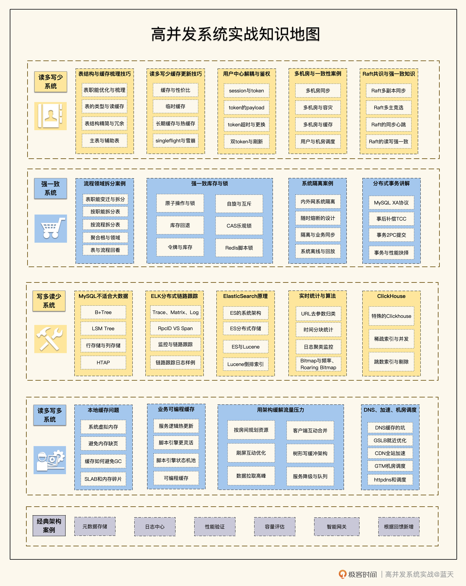

- 00 开篇词 高并发系统，技术实力的试金石.md.html
- 01 结构梳理：大并发下，你的数据库表可能成为性能隐患.md.html
- 02 缓存一致：读多写少时，如何解决数据更新缓存不同步？.md.html
- 03 Token：如何降低用户身份鉴权的流量压力？.md.html
- 04 同城双活：如何实现机房之间的数据同步？.md.html
- 05 共识Raft：如何保证多机房数据的一致性？.md.html
- 06 领域拆分：如何合理地拆分系统？.md.html
- 07 强一致锁：如何解决高并发下的库存争抢问题？.md.html
- 08 系统隔离：如何应对高并发流量冲击？.md.html
- 09 分布式事务：多服务的2PC、TCC都是怎么实现的？.md.html
- 10 稀疏索引：为什么高并发写不推荐关系数据库？.md.html
- 11 链路追踪：如何定制一个分布式链路跟踪系统 ？.md.html
- 12 引擎分片：Elasticsearch如何实现大数据检索？.md.html
- 13 实时统计：链路跟踪实时计算中的实用算法.md.html
- 14 跳数索引：后起新秀ClickHouse.md.html
- 15 实践方案：如何用C++自实现链路跟踪？.md.html
- 16 本地缓存：用本地缓存做服务会遇到哪些坑？.md.html
- 17 业务脚本：为什么说可编程订阅式缓存服务更有用？.md.html
- 18 流量拆分：如何通过架构设计缓解流量压力？.md.html
- 19 流量调度：DNS、全站加速及机房负载均衡.md.html
- 20 数据引擎：统一缓存数据平台.md.html
- 21 业务缓存：元数据服务如何实现？.md.html
- 22 存储成本：如何推算日志中心的实现成本？.md.html
- 23 网关编程：如何通过用户网关和缓存降低研发成本？.md.html
- 24 性能压测：压测不完善，效果减一半.md.html
- 答疑课堂 思考题答案（一）.md.html
- 结束语 为者常成，行者常至.md.html
- 捐赠
结束语 为者常成，行者常至
你好，我是徐长龙。
今天是2022年的最后一个月，我们也来到了这门课的最后一讲，很荣幸能陪你度过这几个月的学习时间。感谢你的一路相伴，有很多伙伴的留言的内容很有趣，也给我带来了一些启发。
高并发系统里每一种优化技术，后面都蕴含着许多优秀的思想，这些内容提炼出来是一个很耗精力的过程。
这半年以来，每天晚上我不是在写稿、改稿，就是在查资料，忙到12点也是常态。说实话，写这个专栏远比我想象中更难，需要不断整理自己的思路、优化表达，还要反复查证各类资料料，尽量保证讲到的知识准确无误。
在实践中，我们做系统优化常常要综合考虑、多次试错，才有可能找到适合的解决方法，并没有四海皆准的通用法门。解决一个问题时，会有很多个选项，不同的选项背后又会关联更多的分支，就像是小径分岔的花园。
因此，我觉得比起穷尽各种细节问题，帮你搭建完善的知识体系，形成理解系统的正确思路更为关键。
开发一个系统，我们首先考虑的就是用户量，然后分析用户的主要动作，并根据这些分析数据量以及核心频繁调用的功能是什么（功能是读的多，还是写的多），以此判断出我们的系统类型和优化方向。
确定了优化方向，剩下的工作，就是结合不同类型的系统特点来做设计和优化。这也是这个专栏的设计思路：高并发的优化主流方案与案例为主，实践技巧为辅。
现在，让我再次回顾一下，这几个月来，我们都学到了哪些内容，希望能对你沉淀知识有所帮助。
- 首先，我们从互联网服务里最常见的读多写少系统开始入手。这种系统结构简单、维护方便、成本可控，优化时主要的挑战就是保证数据一致性。
为了做好缓存的数据一致性，我们可以尝试优化数据表结构，并处理好临时缓存和长期缓存的刷新机制。在读多写少系统下，能按ID查询的数据性能最好，关系查询及统计计算放在缓存的话，维护起来会比较难。
按照读多写少系统的发展规律，用户登陆的脱耦合改造也是一个“必经关卡”，这里我们的优化思路是通过签名实现去中心化。到了读多写少的系统演进的后期，多机房数据同步建设也是重要话题，通过Raft共识算法等分布式核心知识的学习，我们为后续进阶学习打下基础。
相比读多写少的系统，强一致性系统需要在保证数据一致性同时，追求更好的性能。我们选择了最典型的电商秒杀系统来分析，秒杀系统常常和多系统耦合，难以管理，所以合理拆分系统非常必要。另外，我们还需要深入了解锁，灵活地使用锁来实现库存争抢功能。
这类系统的优化改造中，需要斩断秒杀服务与内网的耦合，并处理好多服务协调的事务。最近微服务的流行，让分布式事务变成了必备组件，我们通过深入研究了2PC以及TCC这两个例子之后，就能了解大部分分布式事务的实现思路。
至于写多读少的系统，则是监控系统及日志中心的核心支撑。
优化时主要有两个挑战：一个是协调多服务器，提供线性分片来提升读写性能；另一个是理解分布式服务如何应对写压力，并在此基础上做好分布式数据服务的存储和查询。我们以日志中心为例，明白了几大数据引擎的实现和原理，就能更深入地理解分布式存储、查询、扩容的核心思路。
此外，我还分享了如何在资源有限的情况下，实现分布式链路跟踪系统，只有做好了监控，才能更好地观测、理解我们的系统。这样的探索有助于理解一些大厂的实践思路，建议你课后多多尝试这些技巧。
读多写多的系统是难度最高的一类服务，可以说是我们行业的天花板，对服务响应要求更高，还得处理好系统的高可用问题。
由于集中式缓存很难满足这类服务的需要，我们往往为了做好数据缓存做出各种尝试。然而无论是本地缓存，还是分流架构（比如引入脚本引擎集成），实现起来都有重重挑战，稍不留意就会踩坑。为了尽力避免业务服务缓存应对高并发读写的情况，我们还要设法合理拆分架构，并优化流量调度。
除了上面这四大类系统，我们还在内网建设这个部分讨论了对象存储、日志中心成本估算、如何巧妙使用网关、如何落地压测等问题。相信这些能帮你打开视野、开阔思路，更重要的是让你从容应对业务流量增长带来的冲击。这里再次感谢同学们的留言，很多内容也激发了我的灵感，尤其是在写内网建设这部分的时候，我结合留言里的疑问做了不少优化。
也许你接触的系统，现在并没有那么大的流量，但我仍然认为，高并发是未来方向。这和大多数互联网公司的业务发展规律有关：很多业务在前期，会通过算法和硬件来应对性能问题，但流量变大之后，硬件维护成本会居高不下；即便很多大型互联网公司，系统也需要持续优化改进，才能匹配日益增长的业务需要。
大部分业务系统会优化成读多写少的类型，这类架构设计都会以缓存、分布式队列为主，硬扛常见的用户流量压力，相对而言，这种服务最省钱。
强一致性的交易系统，则是通过缩小争抢强一致的服务及数据粒度，并不断拆分隔离系统，以此分散流量，最终控制成本。
如果是基础服务优化，那么我们只能通过隔离、算法、队列、动态调配基础服务器资源，降低存储周期等方式来硬扛流量压力，降低我们的成本。待业务成熟后，会逐渐优化掉一些无用业务流程及功能，节省基础服务的投入。
至于读多写多的核心业务，我们前期只能投入大量硬件资源，并配合CDN做流量调度。不过等到流量降低时或市场成熟时，还是会尝试把一些服务降成读多写少。
专栏里，为了给你呈现一条足够清晰的知识脉络，我把系统按数据特征分了四大类。然而实际的系统里可能会更加复杂，所以你在区分系统类型的时候很可能会产生困惑：这个服务、这个系统到底属于上面哪种类型？
事实上，当你碰到这种情况的时候，就需要思考一下：这些不同类型的服务是否需要单独拆开、分别部署？一个系统如果混合使用多个运行模式，其组合复杂度会随着时间呈指数增长，逐渐让系统往失控的方向靠近。
理想状态是业务系统设计得更简单一些，让模块更加垂直。如果确实存在混合情况，要么就选一种类型作为主要优化方向，要么就把系统彻底拆开。不同类型的系统，优化方向并不一样，相应的配套设施、服务器对各层的投入比例，还有基础支撑要求都不一样，混在一起不但浪费硬件资源，而且不好维护。
说到这里，我们可以再想想优化的核心价值到底是什么？是让服务跑得更快？还是让功能更好用？还是让我们的设计更简洁统一？我觉得这些答案都对，但除此之外还有一个更核心的价值——节省成本。
你会发现，各种优化和新技术都在试图降低成本，无论解法是拆分、解耦还是集成。而监控和规范流程也是同样的道理，看似这些没能直接节约成本，但却能尽早发现系统隐患，间接降低我们解决问题的成本，减少潜在损失。
所以，相信在未来高并发优化会发挥出更大的价值，节省成本，正是高并发优化的核心竞争力。
课程的学习告一段落，到了说再见的时候。这门课可以说是高并发系统学习的一个索引，如果你能认真阅读、深挖，不断思考、实践，你的未来会拥有更大的空间。
如果遇到了什么问题，也欢迎继续在留言区里给我留言。
行业一直在飞速发展，各种技术不断更新换代，等待我们的是浩如烟海的知识海洋，一起努力前行吧。
高并发系统的优化无法毕其功于一役，个人的成长精进也一样。为者常成，行者常至，愿你我都能在未来的事业中披荆斩棘，所向披靡，再会！
最后，我还给你准备了一份毕业问卷，希望你能花两三分钟填写一下，非常期待能听到你对这门课的反馈。
© 2019 - 2023 Liangliang Lee. Powered by gin and hexo-theme-book.